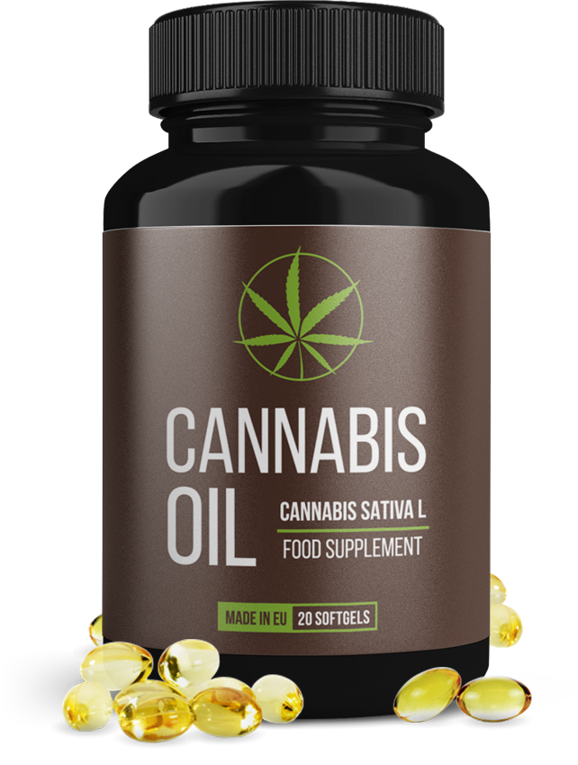

Τα αντιβιοτικά και το ορθό μασάζ δεν χρειάζονται πλέον!
Οι Έλληνες επιστήμονες έχουν σημειώσει σημαντική πρόοδο στη θεραπεία της χρόνιας προστατίτιδας. Τώρα κάθε άνδρας μπορεί να θεραπεύσει τη φλόγωση του προστάτη στο σπίτι σε 7 ημέρες!
Ο προστάτης είναι η 'δεύτερη καρδιά' ενός ανδρα. Δυστυχώς, λόγω των αρνητικών παραγόντων, καθώς και μετά την ηλικία των 40 ετών, ο προστάτης ερεθίζεται και μεγεθύνεται. Σύμφωνα με τα στατιστικά στοιχεία του Ευρωπαϊκού Ινστιτούτου Υγείας, η βακτηριακή ή μη μολυσματική προστατίτιδα παρουσιάζεται (σε ένα ή άλλο βαθμό) στους 9 από τους 10 άνδρες.
Παρά την ευρέως διαδεδομένη παθολογία, μέχρι σήμερα δεν υπάρχει σωστή και γρήγορη θεραπεία για αυτήν. Τα διαθέσιμα φάρμακα και φυσιοθεραπεία έχουν εφευρεθεί 50-60 χρόνια πριν. Δυστυχώς, τώρα αυτά είναι όχι μόνο ανθυγιεινές (αφού τη βάση της θεραπείας αποτελούν ισχυρά αντιβιοτικά), αλλά και αναποτελεσματικά. Συχνά (σε περισσότερο από το 93% των περιπτώσεων), η προστατίτιδα επανέρχεται ξανά μετά τη θεραπεία. Λόγω αυτού, πολλοί γιατροί ισχυρίζονται ότι η χρόνια προστατίτιδα είναι ανίατη.
Ωστόσο, οι Ελβετοί επιστήμονες έχουν βρει τον τρόπο που μπορεί να βελτιώσει τον προστάτη και βοηθά να απαλλαγείτε από την προστατίτιδα ΟΛΟΣΧΕΡΏΣΙ! Αξίζει να σημειωθεί ότι αυτή η μέθοδος χρησιμοποιούνταν από τους προγόνους μας. Οι επιστήμονες το βελτίωσαν μόνο. Με αυτό, μπορείτε να θεραπεύσετε τη προστατίτιδα σε οποιοδήποτε στάδιο, ακόμη και όταν έχει ήδη οδηγήσει σε αδένωμα.
Σε συνάντηση με δημοσιογράφους, η εφεύρεση των Ελβετών επιστημόνων σχολιάστηκε από έναν διάσημο ουρολόγο, ανδρολόγο, γιατρό της υψηλότερης κατηγορίας με εμπειρία άνω των 30 ετών, από τον καθηγητή Brian Atkins

Δημοσιογράφος: Κύριε Atkins, πείτε παρακαλώ, ποιο είναι το κίνδυνος της προστατίτιδας; Είναι απαραίτητο να θεραπεύεται;
Brian Atkins: Πρέπει να θεραπεύεται η προστατίτιδα. Ο προστάτης, τον οποίον επηρεάζει αυτή η παθολογία, είναι ένα εξαιρετικά σημαντικό όργανο. Σε πολλά σημεία η υγεία ενός άνδρα εξαρτάται από την κατάσταση του προστάτη. Ο προστάτης εκτελεί διάφορες ζωτικές λειτουργίες: παράγει την προστατική έκκριση, ελέγχει την εκροή των ούρων, αποτρέπει τη διείσδυση λοίμωξης από την ουρήθρα στην άνω ουροφόρο οδό, παράγει προσταγλανδίνη Ε και ρυθμίζει την ψυχο-συναισθηματική κατάσταση των ανδρών. Επομένως, τα προβλήματα με αυτό το όργανο μπορεί να οδηγήσουν στην ανάπτυξη πολλών παθολογιών, όπως: ανικανότητα, φλόγωση των νεφρών και της ουροδόχου κύστης, μείωση της ανοσίας, μείωση της παραγωγής τεστοστερόνης και, ως εκ τούτου, ταχεία γήρανση του σώματος, καρδιαγγειακή νόσο και καταθλίψεις.
Χωρίς θεραπεία, ακόμη και με χρόνια προστατίτιδα, δηλαδή όταν δεν υπάρχουν οξεία συμπτώματα, εμφανίζονται παθολογικές μεταβολές στον προστάτη, οι οποίες οδηγούν πάντα σε αδένωμα και στη συνέχεια σε καρκίνο του προστάτη. Όταν θα συμβεί αυτό – είναι μόνο θέμα χρόνου. Σε μερικούς, ο παθολογική μετατροπή του ιστού του προστάτη συμβαίνει γρήγορα, σε άλλους – αργά.
Επιπλέον, η προστατίτιδα τείνει να επιδεινώνεται. Με κάθε επιδείνωση, τα συμπτώματα θα γίνουν ισχυρότερα. Ποια είναι αυτά τα συμπτώματα: φλεγμονή του προστάτη, δυσκολία στην ούρηση, πόνοι στους όρχεις και στο κάτω μέρος της μέσης, καύση και πόνος κατά την ούρηση, συχνά τρεχάματα στην τουαλέτα.
Η προστατίτιδα δεν είναι καθόλου αβλαβής ασθένεια. Παραμελώντας τη θεραπεία, ένας άνθρωπος κυριολεκτικά συντομεύει τη ζωή του. Η νόσος πρέπει να αντιμετωπιστεί το συντομότερο δυνατό.
Δημοσιογράφος: Γιατί οι παραδοσιακές μέθοδοι θεραπείας έχουν χαμηλό θεραπευτικό αποτέλεσμα;
Brian Atkins: Η προστατίτιδα είναι μια εξαιρετικά ύπουλη ασθένεια και είναι εξαιρετικά επιβιώσιμη. Έτσι οι γιατροί σκεφτόντουσαν μέχρι τώρα. Αυτό οφείλεται στο γεγονός ότι τα διαθέσιμα φάρμακα δεν ήταν σε θέση να θεραπεύσουν τον προστάτη. Ανακαλυφθέντα πριν από πολλές δεκαετίες, τα 90% των φαρμάκων αποσκοπούν μόνο στην εξάλειψη των συμπτωμάτων της νόσου, αλλά όχι στην εξάλειψη των αιτιών.
Δηλαδή, στοχεύουν στην ανακούφιση της φλεγμονής του προστάτη για τη διευκόλυνση της ούρησης και την απομάκρυνση του πόνου, καθώς και για την καταπολέμηση της παθογόνου μικροχλωρίδας, η οποία σχηματίζεται στην έκκριση του αδένα του προστάτη. Ναι, βοηθάει για λίγο. Ωστόσο, είναι πολύ δύσκολο να σκοτωθούν όλα τα βακτηρίδια, μέχρι το τελευταίο. Μερικοί από αυτούς παραμένουν πάντα. Επομένως, η προστατίτιδα στο 93% των περιπτώσεων εμφανίζεται επανειλημμένα ήδη τον επόμενο χρόνο μετά τη θεραπεία.
Για να σκοτωθεί όλη η παθογόνος μικροχλωρίδα, είναι απαραίτητα ισχυρά αντιβιοτικά, αλλά για να λειτουργήσουν είναι απαραίτητο να αποσπαστεί ο ίδιος ο παθογόνος παράγοντας από τον προστάτη. Για το σκοπό αυτό, συνταγογραφείται το πρωκτικό μασάζ, που δεν αγαπήθηκε από πολλούς άνδρες.
Λόγω της πολυπλοκότητας της θεραπείας, πολλοί ταπεινώνονται με όλες τις δυσκολίες που προκαλεί η παθολογία στη ζωή τους. Αλλά αυτό είναι λάθος και, όπως είπα, επικίνδυνο. Η νέα μέθοδος σας επιτρέπει να θεραπεύετε τη προστατίτιδα χωρίς πρωκτικό μασάζ και αντιβιοτικά, και αυτό είναι το φοβερό πλεονέκτημα της. Μπορείτε να τη χρησιμοποιείτε στο σπίτι μόνος σας.
Δημοσιογράφος: Πείτε μας λεπτομερέστερα ποια είναι η ανακάλυψη ελβετικών επιστημόνων;
Brian Atkins: Ανακάλυψαν έναν τρόπο που όχι μόνο εξαλείφει τα συμπτώματα της προστατίτιδας, αλλά, και που είναι πιο σημαντικό, τα αίτια της. Θα προσπαθήσω να το εξηγήσω απλά. Δείτε γιατί εμφανίζεται προστατίτιδα; Γιατί οι περιπτώσεις εμφάνισής του στους νέους είναι μεμονωμένες και τα άτομα άνω των 40 ετών, σε κάποιο βαθμό, σχεδόν το έχουν όλοι;
Στην πραγματικότητα, αυτό είναι γνωστό εδώ και πολύ καιρό. Η αιτία της στασιμότητας και η ανάπτυξη βακτηριδίων είναι η επιδείνωση της μεταφοράς αίματος στον προστάτη. Το θέμα είναι ότι αυτό το όργανο κυριολεκτικά περιβάλλεται από ένα δίκτυο μικρών τριχοειδών αγγείων. Με την ηλικία, αυτά τα τριχοειδή αγγεία είναι φραγμένα με χοληστερόλη, το τριχοειδές δίκτυο γίνεται φτωχότερο. Ως αποτέλεσμα, η παροχή αίματος και η διατροφή του προστάτη επιδεινώνεται. Και αυτό το όργανο είναι πολύ ευαίσθητο σε αυτά, καθώς εκτελεί πολλές διαφορετικές λειτουργίες και χρειάζεται μια μεγάλη ποσότητα θρεπτικών ουσιών. Ως αποτέλεσμα, λόγω ανεπαρκούς παροχής αίματος, ο αδένας του προστάτη αρχίζει να λειτουργεί εσφαλμένα, γεγονός που οδηγεί σε στασιμότητα. Επιπλέον, η ανοσία του αδένα υποχωρεί και παύει να αντιμετωπίζει παθογόνους μικροοργανισμούς που πολλαπλασιάζουν σαν τη χιονοστιβάδα.

Αναπτυγμένο σύστημα τροφοδοσίας του προστάτη με αίμα
Ποια είναι η αξία των Ελβετών επιστημόνων σε συγκεκριμένη περίπτωση; Βρήκαν έναν τρόπο να βελτιώσουν το τριχοειδές δίκτυο του προστάτη και να αποκαταστήσουν την κανονική τροφοδοσία αίματος στον αδένα. Οι επιστήμονες έχουν διαπιστώσει ότι οι αποθέσεις χοληστερόλης σε αυτό το μέρος των αγγείων καταστρέφουν τα Ωμέγα-ακόρεστα λιπαρά οξέα (Ωμέγα-3, Ωμέγα-6, Ωμέγα-9) σε αναλογία 1:3:10. Επιπλέον, οι επιστήμονες έχουν βρει ένα φυτό στο οποίο αυτά τα οξέα εμπεριέχονται στη σωστή αναλογία. Αποδείχθηκε ότι αυτό το φυτό είναι η κάνναβη, ή για την ακρίβεια - όχι το ίδιο το φυτό - αλλά οι σπόροι του. Στην πραγματικότητα, οι σπόροι κάνναβης είναι το μόνο φυσικό προϊόν στο οποίο τα ωμέγα-ακόρεστα λιπαρά οξέα είναι στη σωστή αναλογία.
Οι επιστήμονες τράβηξαν εξαιρετικά συμπυκνωμένο έλαιο από σπόρους κάνναβης και διεξήγαγαν κλινικές δοκιμές στο Ινστιτούτο Ουρολογίας της Γενεύης. Συνολικά, συμμετείχαν περίπου 500 εθελοντές που πάσχουν από χρόνια προστατίτιδα. Θέλω να σας δείξω τα αποτελέσματά τους, είναι πραγματικά εκπληκτικά!
Αποτελέσματα δοκιμών:
- Πλήρης θεραπεία της προστατίτιδας - 96% των μελετηθέντων ασθενών
- Η φλόγωση υποχώρησε, η ούρηση επέστρεψε στο φυσιολογικό - το 100% των ασθενών
- Αυξημένα επίπεδα τεστοστερόνης - 87% των μελετηθέντων
- Η ανάκτηση υγιούς δύναμης - το 91% των μελετηθέντων
- Πέρασε ο πόνος του περίνεου και κατά της ούρησης - το 99% των μελετηθέντων
- Έλλειψη εθισμού και παρενέργειες - 100% των μελετηθέντων
Όπως μπορείτε να δείτε, το ποσοστό της πλήρως εξαλειμμένης προστατίτιδας είναι πολύ υψηλό. Σε σύγκριση με τη συμβατική θεραπεία, η θεραπεία με την χρήση του έλαιου CBD είναι 17 φορές πιο αποτελεσματική. Ταυτόχρονα, το ίδιο το έλαιο είναι απολύτως φυσικό και επομένως όχι μόνο δεν βλάπτει το σώμα αλλά, αντίθετα, το θεραπεύει. Καθαρίζει τα αιμοφόρα αγγεία σε όλο το σώμα. Πρόκειται για μια πραγματική επανάσταση στη θεραπεία της προστατίτιδας και την αποκατάσταση της ισχύος.
ΔΗΜΟΣΙΟΓΡΑΦΟΣ: το έλαιο υψηλής συμπύκνωσης CBD σε κάψουλες θα πωλείται σε ευρωπαϊκά φαρμακεία; Πότε θα παρουσιαστεί και σε ποια τιμή;
Brian Atkins: Σύμφωνα με τον κατασκευαστή, η πωλήσεις του σε ευρωπαϊκές αλυσίδες φαρμακείων, συμπεριλαμβανομένης της Ελλάδας, θα ξεκινήσει όχι νωρίτερα από το 2022. Αυτό οφείλεται στο γεγονός ότι το κανναβέλαιο είναι ένα αρκετά σπάνιο προϊόν. Σήμερα στην Ευρώπη σχεδόν δεν υπάρχουν χωράφια κάνναβης, από τα οποία παράγεται το έλαιο.
κάψουλες
Τώρα (και, νομίζω, θα διαρκέσει μερικά ακόμη χρόνια) το μπορεί να παραγγελθεί μόνο στην επίσημη ιστοσελίδα του κατασκευαστή .
Σχετικά με την τιμή... Προς το παρόν η τιμή είναι ελάχιστη, δεδομένου ότι το υψηλής συγκέντρωσης έλαιο κάνναβης πωλείται από τον ίδιο τον κατασκευαστή, παρακάμπτοντας τους μεσάζοντες. Επομένως, αυτή η μέθοδος θεραπείας της προστατίτιδας είναι διαθέσιμη σε όλους. Το ίδιο το λάδι μπορεί να ληφθεί ακόμα και χωρίς ιατρική συνταγή.
Το μόνο που πρέπει να θυμόμαστε είναι ότι το κανναβέλαιο σε κάψουλες πωλείται σε περιορισμένες ποσότητες και ο αριθμός των αιτήσεων αυξάνεται καθημερινά, καθώς όλο και περισσότεροι άνδρες μαθαίνουν για τις υπέροχες ιδιότητές του. Ως εκ τούτου, θα συνιστούσα σε όλους να αφήσουν την αίτηση για το έλαιο όσο το δυνατόν νωρίτερα, ενώ εξακολουθεί να είναι διαθέσιμη ακόμη.
Προσοχή:
- Το φάρμακο εξαλείφει τη φλεγμονή στον προστάτη.
- Ενισχύει τη σεξουαλική επιθυμία αμέσως μετά τη χορήγηση.
- Κανονικοποιεί την ούρηση.
- Επαναφέρει τη φυσική ισχύ.
- Αυξάνει τη ζωτικότητα.
ΑΠΟΤΕΛΕΣΜΑΤΑ ΤΩΝ ΑΝΑΓΝΩΣΤΩΝ

"Έκπληκτικό φάρμακο. Υπέφερα από προστατίτιδα για περισσότερα από 10 χρόνια. Δεν μπορούσα να κοιμηθώ σαν άνθρωπος - υπήρχαν συνεχείς κλήσεις στην τουαλέτα. Για το σεξ δεν μηλάμε καθόλου - οι πόνοι ήταν τέτοιοι που απλά δεν μπορούσα να το αντέξω. Υποφέραμε και εγώ, και η γυναίκα μου.
Δοκίμασα αρκετά φάρμακα για τον προστάτη, αλλά το με εξέπληξε. Όχι μόνο τα προβλήματα πόνου και ούρησης εξαφανίστηκαν, αλλά ξύπνησε το ενδιαφέρον για τις γυναίκες, το οποίο άρχισε να ξεθωριάζει με την ηλικία. Αυτό το φάρμακο έσωσε και εμένα και την προσωπική μου ζωή! Το συνιστώ σε όλους!"
Βασίλης Ιωαννίδης
63 ετών

"Με τη συμβουλή του θεράποντος ιατρού, αποφάσισα να δοκιμάσω το χωρίς να ελπίζω καν, επειδή ήμουν ήδη απελπισμένος να βρω αποτελεσματικό φάρμακο για την προστατίτιδα.
Ωστόσο, προς μεγάλη μου έκπληξη και μεγάλη χαρά, μια εβδομάδα μετά την έναρξη της θεραπείας, ένιωσα σημαντικές βελτιώσεις - ο πόνος και η φλεγμονή εξαφανίστηκαν. Προς το τέλος της θεραπείας αποκαταστάθηκε η δύναμη και ξέχασα τους πόνους και την ταλαιπωρία. Πραγματικά θαυματουργό φάρμακο."
Ιωάννης Σπυρόπουλος
69 ετών
Ιωσήφ Μ.
Σας ευχαριστώ! Πολύ ενδιαφέρων. Εγώ παρήγγειλα τις κάψουλες. Η προστατίτιδα ειλικρινά μου χάλασε τη ζωή!
Λούκας Π.
Παρήγγειλα και εγώ. Είχα ακούσει από άλλους ότι το βοηθά πολύ καλά αν έχεις προστατίτιδα και έλλειψη ανδρικής ισχύος. Δεν είχα ιδέα που μπορούσα να το αγοράσω. Ευχαριστώ για το link!
Γιάννης Φ.
Και εγώ είμαι ένας από αυτούς που πρόλαβε να το δοκιμάσει. Πολύ καλά με βοήθησε. Σταμάτησα να τρέχω προς την τουαλέτα κάθε τόσο. Οι πόνοι αποχώρησαν. Η ισχύ έγινε κυριολεκτικά σκληρή. Είμαι ευχαριστημένος απόλυτα. Και μάλιστα όλα αυτά χωρίς κανένα αντιβιοτικό, ούτε μασάζ!
Μιχάλης Β.
Συμφωνώ! Τέλειο φάρμακο. Πάλευα με την προστατίτιδα 2 χρόνια, δεν μπόρεσα να κάνω τίποτες. Από τη στιγμή που άρχισα να παίρνω , αυτή η προστατίτιδα πέρασε σε ενάμιση εβδομάδα. Το συνιστώ σε όλους!
Ματθέος Σ.
Παρήγγειλα και εγώ. Θεωρώ πώς πρέπει να το δοκιμάσω. Αγανάκτησα να παλεύω με την προστατίτιδα.
Βαγγέλης Μ.
Η χρόνια προστατίτιδα είναι μαζί μου από τα 38 μου τα χρόνια. Τώρα είμαι 41 χρονών. Από τότε είχα περάσει 2 θεραπείες, όταν οι πόνοι με σκότωναν. Τελευταία φορά οι γιατροί με το ζόρι με έσωσαν. Είπαν ότι παραλίγο και η προστατίτιδα θα μετατρεπόταν σε καρκίνο του προστάτη. Για αυτό, συνιστώ σε όσους έχουν την προστατίτιδα, να την απαλλαχτούν συντομότερο δυνατόν. Είναι πολύ επικίνδυνη αρρώστια
Άρης Χ.
Διάβασα γι το έλαιο στην αναφερόμενη ιστοσελίδα . Εντυπωσιακό! Άφησα το αίτημα.
Λάκης Ο.
Το παρήγγειλα. 68 ετών. Η προστατίτιδα με βασανίζει εδώ και 3 χρόνια. Υπάρχει και το ρίσκο του αδενώματος του προστάτη. Τον προηγούμενο μήνα πήγαινα σε ηλεκτρονικό πρωκτικό μασάζ - είναι τελείως βασανιστικό πράμα, με το ζόρι άντεξα πρόγραμμα 2 εβδομάδων. Και στο τέλος - κανένα αποτέλεσμα.
Ιωάννα Φ.
Πρέπει οπωσδήποτε να παραγγείλω τέτοιο για τον άνδρα μου. Εχει την προστατίτιδα περίπου εδώ και 5 χρόνια. Η ανδρική του ισχύ σχεδόν εξαφανίστηκε. Και είναι μάλιστα 61 χρονών
Κώστας Κ.
Σας ευχαριστούμε!
Άκης Χ.
Υπέροχο φάρμακο! Η προστατίτιδα φεύγει!! Το συνιστώ σε όλους, ειδικά που ακόμα είναι διαθέσιμο. Αισθάνομαι απίστευτα, όλα τα συμπτώματα πέρασαν μέσα σε λίγες μέρες. Τίποτε δεν με βοήθησε τόσο καλά.
Νίκος Σ.
- είναι το καλύτερο φάρμακο! Το έπαιρνα επί 3 μήνες περίπου. Η προστατίτιδα εξαφανίστηκε! Το είχα επί αρκετά χρόνια. Το πέος δεν στεκόταν αρκετά καλά, και τελείωνα πολύ γρήγορα. Τώρα όλα γίνανε όπως πρέπει!
Σούλης Ρ.
Πρόλαβα να το παραγγείλω
Δέμης Κ.
Σήμερα είναι η τρίτη μέρα που το παίρνω. Καλυτέρεψε η κατάστασή μού. Σας ευχαριστούμε!
Μπορείτε να παραγγείλετε οι κάψουλες στον επίσημο ιστότοπο
© 2023 Copyright. Με τήρηση όλον των δικαιωμάτων.